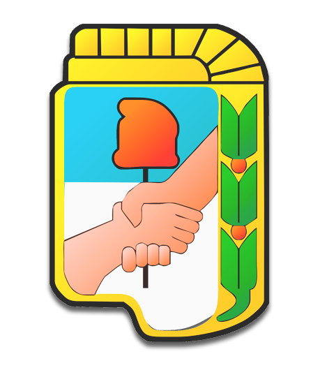

Test de coyuntura peronista
¿Qué línea interna te identifica más? ¿Cuál menos?

Sos peronista línea...

Julio Bárbaro
Ex Diputado y Senador. Ex Ministro de Cultura e Interventor del COMFER
AfinesLuis Barrionuevo. Descripción
Estás convencido que un peronismo moderno está ligado a una postura republicana, alejada de los populismos latinoamericanos.
Nunca fuiste kirchnerista o si lo fuiste, quizás preferís no recordarlo.
Detestás a Cristina. Querés verla a ella y a los suyos desaparecer del mapa político argentino.
Festejaste la llegada de Macri porque indicaba el fin de la pesadilla del autoritarismo K, pero ahora estás un poquito espantado.
Algunos compañeros quizás te acusen de creerte un oligarca y de haber bajado las banderas justicialistas. Pero a vos no te importa y hacés bien. Es que equivocados o no, apresurados o retardatarios, peronistas somos todos.
Sos peronista línea...
Miguel Ángel Pichetto
Senador por la Provincia de Río Negro
AfinesJuan Manuel Urtubey, Juan Schiaretti. Descripción
Creés en un peronismo abocado a defender el federalismo, a concentrarse en la gestión y al debate técnico y desideologizado.
Sos un peronista de las Provincias, te causa rechazo el progresismo porteño.
A medida que observabas la creciente radicalización izquierdista de Cristina, fuiste perdiendo el entusiasmo. Hoy la ves como la mariscal de la derrota, por eso querés una renovación que no la incluya.
Lo más importante para el peronismo es disputar el poder. La táctica antes que la ideología. Por eso sos partidario de votarle leyes al macrismo, si significan fondos para las Provincias.
Estas preferencias te valen ser increpado por algunos compañeros. Sumado a que repudian tu tendencia conservadora, te reprochan que abandonaste las banderas del peronismo y que te prostituís a cambio del dinero oficialista.
A vos todo eso te tiene sin cuidado y hacés bien. Es que equivocados o no, apresurados o retardatarios, peronistas somos todos.
Sos peronista línea...
Sergio Massa
Ex diputado por la Provincia de Buenos Aires, Jefe de Gabinete e Intendente de Tigre. Actual Líder del Frente Renovador.
AfinesHéctor Daer, Carlos Acuña, Marco Lavagna, Graciela Camaño. Descripción
Creés que la principal tarea del justicialismo es limpiar su mala imagen frente al conjunto de la sociedad. Combatir la idea de que el peronista es siempre un malandra. Fuiste kirchnerista, pero más de Néstor que de Cristina, o solamente de Néstor.
Planteás que hacia 2019 el peronismo debe renovarse, ofreciendo una propuesta que se desmarque del gobierno actual, que identificás como un gobierno de ricos, y del anterior, que reseñás como un gobierno corrupto.
En lo económico seguramente preferís un dólar alto y un gasto público más ajustado para acercarnos al modelo económico de la dupla Kirchner-Lavagna y alejarnos del populista de Cristina.
Una clave para el desarrollo está en terminar con la tendencia argentina de gobiernos que van de un extremo ideológico al otro, manteniéndonos firmemente en el centro.
Te distingue de algunos compañeros la idea de que hay que estar siempre atento a lo que piensa el votante "swinger", ese que no se identifica con ningún partido, es volátil y según se decante decide las elecciones. Por eso prestás mucha atención a encuestas y el humor social del momento.
Esto te lleva a estar en constante cambio y transformación, razón por la cual tus detractores, tanto por izquierda como por derecha, te recriminan. Te dicen que no tenes convicciones, que sos panqueque: un kirchnerista encubierto, o que sos un traidor que cambió la doctrina peronista por los estudios de opinión.
A vos todo eso te tiene sin cuidado y hacés bien. Porque equivocados o no, combativos o moderados, peronistas somos todos.
Sos peronista línea...
Martín Insaurralde
Ex diputado por la Provincia de Buenos Aires. Actual Intendente de Lomas de Zamora.
AfinesGustavo Menéndez, Juan Zabaleta, Antonio Caló. Descripción
Sos de los que sostienen que es necesaria una renovación, apuntalando intendentes jóvenes de la Provincia de Buenos Aires. Sin embargo, entendés que por el caudal de votos que maneja Cristina, es imposible dejarla afuera de un armado que pueda resultar victorioso.
Bancás al anterior gobierno pero con reparos. Creés que se perdió porque no se le puso suficiente atención a reclamos como el de mayor seguridad o ajustar el piso del Impuesto a las Ganancias.
Querés un gran frente electoral que no deje afuera a nadie que sea opositor a Macri. Lo más importante para vos es que el peronismo cambie de discurso, las formas. Que sean más amenas para el ciudadano de a pie. Menos agresivas, con menos carga ideológica y mucho más énfasis en cuestiones puntuales de gestión.
Algunos compañeros te recriminan no cortar lazos con Cristina, a la que ven como mariscal de la derrota, mientras que otros te señalan no tener suficiente compromiso con ella o te remarcan lo que perciben como una fluctuación del grado de apoyo y lealtad que le profesás. Tampoco les gusta tu idea de negociación constante con el oficialismo. Te tachan de tibio, de no tener convicciones.
A vos todo eso te tiene sin cuidado y hacés bien. Porque equivocados o no, combativos o moderados, peronistas somos todos.
Sos peronista línea...
Guillermo Moreno
Ex Secretario de Comercio Interior la Nación, Ex Secretario de Comunicaciones de la Nación.
Descripción
Tu obsesión es la unidad del peronismo en todas sus expresiones. Creés que es una falta de respeto hablar de "traidores" o, en el peor de los casos, un infantilismo de una parte progresista-liberal del campo nacional y popular, de gente recién llegada al peronismo y que todavía no lo entiende del todo. Estos que buscan un armado de puros son los que deberían quedar afuera o pensárselo mejor antes de señalar con el dedo a compañeros y excluirlos.
Como buen soldado de Perón bancaste a Néstor y Cristina.
Estás convencido de que el PJ, el Frente Renovador, Cumplir y Unidad Ciudadana deben estar juntos. De esta forma arrasarían en los comicios. Esa unidad sería lo mejor que le podría pasar al peronismo, simplemente porque sería lo peor que le podría pasar al enemigo que tenés claramente identificado: la oligarquía.
Dicen que estás un poco loco, que con tu lengua belicosa no convencés a nadie o hasta espantás a la gente, mas vos no tenés tiempo para escuchar esas críticas. Toda tu voluntad está puesta en una cosa solamente: ser un auténtico soldado de tu pueblo, ser un auténtico soldado de Perón.
Sos peronista línea...
Fernando "Chino" Navarro
Ex diputado de la Provincia de Buenos Aires.
Dirigente del Movimiento Evita.
AfinesEmilio Pérsico, Juan Grabois. Descripción
Reivindicás los avances y logros del gobierno kirchnerista por el simple hecho de que apoyás cualquier iniciativa política que favorezca a los que menos tienen. Sin embargo, creés que en el 2015 se perdió porque faltaron cosas por hacer. Particularmente, más políticas focalizadas en los sectores de la economía popular: aquellos que, a pesar de esos 12 años de avances y crecimiento, no pudieron salir de la pobreza.
Abogás por una gran interna peronista utilizando la herramienta de las PASO.
No dudás de la inteligencia y capacidad de lucha contra los poderes concentrados que demostró CFK, pero sí le cuestionás un estilo de conducción demasiado cerrado, que pide obediencia total y no acepta cuestionamientos. Además, sos de la idea de que la imágen de López en un convento tirando bolsos quedó grabada en la mente de los argentinos, lo que significa un golpe irreversible para ella.
Por todo esto buscás nuevos dirigentes con proyección a futuro y capacidad de un liderazgo más inclusivo. Quizás percibas como uno de ellos a Florencio Randazzo.
No das tregua en la defensa de los descartados por el sistema y vas a dar todo de vos para vencer a la derecha en las urnas e ir por todo lo que falta.
Algunos compañeros te tachan de traidor por haber estado cerca de Cristina y hoy lejos. Tampoco les gusta la auto-crítica constante que practicás. Además, les molesta que no veas mal llevarle propuestas al oficialismo, en tanto que se oponen a cualquier tipo de negocación. Pero a vos las críticas te tienen sin cuidado, porque cada compañero despliega la táctica que cree mejor en cada momento histórico. Sabés que apresurados o retardatarios, equivocados o no, peronistas somos todos.
Sos peronista línea...
Diputado por la Provincia de Santa Fé.
Jefe del bloque FPV-PJ.
Ex Ministro de Defensa de la Nación.
AfinesJuliana Di Tullio, Héctor Recalde, Jorge Capitanich Descripción
Pocos se atreven a cuestionar tu peronismo, menos aún se animan a cuestionar tu kirchnerismo.
Tenés vocación frentista, querés la mayor cantidad de peronistas unidos, siempre y cuando se respete un programa, un conjunto de ideas que sean principios ordenadores, más que los nombres propios.
A diferencia de otros sectores del kirchnerismo duro, no concordás con la idea alfonsinista de que "si la sociedad se derechiza hay que prepararse para perder elecciones", o de buscar un armado progresista totalmente nuevo junto a los sectores de la izquierda más anti-peronista, mientras esperamos que el pueblo se canse de Macri o explote la economía. Preferís proponer una alianza competitiva y por eso seguramente querés tender puentes con esos compañeros que alguna vez estuvieron y se fueron. Aquellos que hoy quizás ceden a las presiones del macrismo, por miedo al "carpetazo" o por falta de convicción. Quizás imaginás un acercamiento a aquellos sectores que pueden aportar densidad política y gobernabilidad a un proyecto que toque intereses. Y que aporten un sostén en momentos tensos, como supo hacer el moyanismo durante los gobiernos kirchneristas.
Algunos compañeros te dirán que estás demasiado obnubilado con la figura de Cristina, que te fanatizaste. Será porque no la consideran peronista o la ven demasiado progresista para su gusto. Y por extensión, a vos también. Pero no dudás en bancarla, ella te representa, admirás su inteligencia, su compromiso con el pueblo. Además, sabes que equivocados o no, apresurados o retardatarios, peronistas somos todos.
Sos peronista línea...
Andrés "Cuervo" Larroque
Diputado de la Nación por la Ciudad de Buenos Aires. Secretario General de La Cámpora.
AfinesMayra Mendoza, Gabriela Cerruti Descripción
Bancás a muerte a Nestor y Cristina. No imaginás a nadie que no sea CFK liderando al peronismo y al campo popular en su totalidad.
Te revuelven el estómago los traidores que votaron con el gobierno el ajuste a los jubilados y no querés verlos cerca de Unidad Ciudana. Preferís construir algo nuevo, verdaderamente progresista, sin medias tintas. Tendiendo lazos con los que le pelean al macrismo en la calle, como Myriam Bregman. O si no quizás esperes que los que se fueron vuelvan al pie de Cristina.
Como sabés que indefectiblemente Macri nos lleva a un estallido económico y no ves posiblidades de que el pejotismo se le plante, ni chances de que éste acepte a CFK estás, como decía Alfonsín, si es que el electorado sigue corrido a la derecha, preparándote para perder la elección. Priorizás dar un mensaje contundente y claro al pueblo de que somos distintos. Estar listos para cuando el pueblo se canse y lo quiera echar.
Tus detractores dirán que sos apresurado, que vas más a la izquierda de lo que el pueblo puede digerir. Que tu purismo nos lleva a una nueva derrota. Algunos sacarán el peronómetro y te acusarán de "trosko", se burlarán de tu apoyo incondicional a Cristina. Pero no dudás en bancarla, ella te representa, admirás su inteligencia, su compromiso con el pueblo. Bien sabés que equivocados o no, apresurados o retardatarios, peronistas somos todos.
Debe ser racional y propositivo. El pueblo no quiere políticos que se opongan por oponerse.
Frenar el plan macrista de ajustes y negocios con el Estado. No podemos permitir nada que implique un retroceso en los derechos adquiridos en los 12 años de gobierno popular. No hay que negociar.
Los opositores debemos proponer alternativas en temas puntuales como la inseguridad y la falta de obras de infraestructura. No le hago caso a quienes dicen que hay que oponerse a todo, la política es diálogo y encontrar puntos en común.
Creo que las fuerzas opositoras deben ofrecerle a la gente alternativas que no estén emparentadas ni con el anterior, que fue un gobierno de ladrones, ni con el actual, que es de ricos.
Macri festeja porque el peronismo no está unido. La unidad es la única forma de combatir a un gobierno oligárquico.
Cada compañero sabrá si negociar o no, depende de su situación política concreta.
Llevando propuestas a los funcionarios oficialistas que estén disupuestos a negociar de buena fé. Si no nos escuchan, luchar en la calle hasta que lo hagan. Nuestro deber es representar a los que no tienen voz, a los descartados.
Hay que coordinar con aquellas fuerzas políticas que no quieran ser solamente opositoras frente a las cámaras de televisión para luego votar con el gobierno. Hay que oponerse con fortaleza para rechazar los proyectos oficialistas y presentar una alternativa real a favor de los trabajadores.
Si le va bien al gobierno nos va bien a todos. Tenemos que ayudar al presidente para que no cometa errores que desilusionen al pueblo que lo eligió en la urnas. Hay que solidificar la democracia y la institucionalidad.
El saldo es ampliamente positivo. Cristina continuó el camino de Néstor: un proyecto nacional y popular del cual me enamoré y banco orgullosamente.
Cristina es una fuera de serie y sus gobiernos así lo reflejaron. Sólo es superada por Néstor y Perón.
Muy positivo. Fue un gran avance en conquista de derechos para el pueblo, pero dejó grandes cuentas pendientes, sobretodo con los trabajadores de la economía popular. Además, hubo demasiada corrupción y sigo esperando la auto-crítica de Cristina en este sentido.
Se llevaron a cabo algunas medidas beneficiosas pero fueron anuladas por todo lo que se robaron. El balance es que fue una oportunidad perdida. Lamentablemente no solucionaron los problemas de fondo de la gente.
Acompañé esos gobiernos porque tuvieron la vocación de defender a los humildes pero naufragó en la irracionalidad de elevar el gasto público excesivamente, por ejemplo. También se cometió el error de asfixiar las economías regionales.
La vida por Cristina. Su gobierno fue verdaderamente nacional y popular, defendió a los que menos tienen y enfrentó a todos los poderosos juntos.
Nefasto. Nos llevó a la decadencia. Íbamos camino a ser Venezuela.
Cristina lideró un gobierno que hizo grandes ampliaciones de derecho a los sectores más humildes. Creo que el balance es positivo. Sin embargo, debemos tomar nota de que hubieron errores graves que nos llevaron a perder elecciones, como no escuchar reclamos por la inseguridad o el de modificar el piso del impuesto a las ganancias.
Cristina es un excelente cuadro. Puede ser la presidenta pero sólo si asume el rol de conductora de todos compañeros, incluyendo a aquellos a los que algunos recién llegados al peronismo osan llamar "traidores".
Ninguno. Ya es un cadáver político. O quizás ahora pueda aspirar a ser la líder de esa izquierda marginal que siempre quiso representar.
Hoy la única que construye un gran polo opositor es Cristina, nadie puede discutirle su liderazgo. Con el tiempo seguramente aparecerán nuevos nombres. Compañeros como Gustavo Menéndez, el nuevo presidente del PJ Bonaerense, y Fernando Gray, son actores posibles para una necesaria renovación que me gustaría que Cristina ayude a construir.
Estar con actores de un gobierno que perdió las últimas elecciones iría contra cualquier manual de ciencia política. Además, ella se fue del peronismo y ahora su construcción descansa en el PC.
Debe sumarse a una nueva construcción con más debate interno, dónde compañeros como Florencio Randazzo encabecen una renovación. A Cristina ya no le da, tiene un techo que no puede perforar. La imágen de López y sus bolsos es irreversible. Ella es responsable de esa tragedia y debe hacerse cargo.
El pasado no vuelve. Su futuro se juega en Comodoro Py, debe rendir cuentas ante la Justicia.
Ella lo decidirá. Seguramente encabezará una alianza grande que contenga al peronismo pero que también lo rebalse. Lo importante es ver bajo qué lineamentos programáticos conseguimos ese frente para que sea una propuesta sólida que enamore al electorado, mas que un rejunte de nombres.
Por más que le pese a tibios y traidores, ella es la dueña de los votos. Es la jefa del movimiento nacional y popular. Debe ser presidenta mientras su salud se lo permita porque nadie le llega a los talones.
Me opongo a hablar de traidores. Cada compañero sabe lo que hace y actúa en consecuencia. Desde el peronismo se entiende que no se combate a la oligarquía atacando compañeros por diferencias tácticas.
Todos juntos: el PJ, Unidad Ciudadana, Cumplir y el Frente Renovador. Con apresurados y retardatarios. Si esto se concreta lo sacamos a Macri.
Sí debemos enderezar a algunos muchachos en nuestro movimiento que tienen tienen vicios moralistas, progresistas-liberales. Ya le hicieron perder la elección a Néstor Kirchner en 2009. No hay que sacar los pies de plato, no hay que tener ataques de purismo que sean funcionales a la oligarquía.
Los gobernadores realmente peronistas han acompañado al presidente porque respetan la democracia. No se puede armar nada con el kirchnerismo. Son ladrones y estalinistas. No representan los valores democráticos ni al pueblo peronista, que siempre rechazó esas ideas extranjeras.
Los justicialistas votaron en cada caso con la responsabilidad que implica el ejercicio del poder. Plantearon sus desidencias y siempre estuvieron dispuestos a mejorar los proyectos oficialistas. Y no, no tiene sentido tender puentes con Cristina y los suyos, son los mariscales de la derrota del peronismo y que para colmo, luego lo abandonaron.
Si bien puedo entender las motivaciones de algunos compañeros apretados por el macrismo y las emergencias de la gestión en las provincias, creo que es un error acompañar leyes que impliquen un retroceso en lo que se consiguió estos años. Se puede y se debe armar un frente, siempre y cuando su orientación sea terminar con el proyecto neo-liberal macrista.
En el peronismo no hay conducción. Por eso algunos pueden perder el rumbo. Hay que llevar a cabo una renovación, donde el centro no sean sus dirigentes sino presentar ideas que seduzcan a la sociedad. Dicho centro depende de que se llegue a una unidad por debate interno y consultando a la gente a través de las PASO, sin que nadie monopolice lapicera ni pida obediencia absoluta.
No concuerdo con acompañar el ajuste a los jubilados. Por eso apoyo formar un gran frente electoral donde el límite no sean las personas, sino las ideas, que deben ser superadoras de las del gobierno de Cambiemos. Un frente para proponer, no para combatir a un enemigo, eso no existe en la política.
Sin duda debe haber diálogo entre todas las fuerzas políticas opositoras, pero no quiero un frente con los que representan la corrupción del pasado.
Los que votaron con el gobierno para pagarle todo sin chistar a los Fondos Buitre o ajustar a los jubilados son traidores, abandonaron la defensa de la justicia social. Con traidores degustadores de sanguchitos ni a la esquina. Aunque perdamos las elecciones del año que viene, debemos concentrarnos en construir un verdadero frente progresista que nos permita estar listos para cuando el pueblo despierte y eche a Macri.